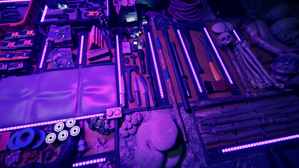

En mission sur une île isolée pour retrouver un milliardaire porté disparu, vous découvrez un monde
de
cauchemar infesté de cannibales. Par vous-même ou avec l'aide d'amis, fabriquez, construisez et
luttez
pour votre survie dans ce jeu de simulation de survie horrifique.
 Un inventaire bien remplie
Un jeu de simulation de survie horrifique
Évoluez dans le monde selon vos règles, avec une liberté totale. C'est vous qui décidez de quoi
faire,
d'où aller et des manières de survivre. Aucun PNJ ne vous aboiera des ordres, aucune mission ne vous
sera imposée. C'est vous qui commandez et qui décidez de la marche à suivre.
Combattez des démons
Entrez dans un monde où vous ne serez en sécurité nulle part. Affrontez une multitude de créatures
mutantes, certaines à l'apparence quasi humaine et d'autres ne ressemblant à rien que vous ayez
jamais
vu. Armez-vous de pistolets, de haches, de matraques électriques et d'objets en tous genres pour
assurer
votre protection et celle de vos proches.
Construisez et fabriquez
Ressentez chaque interaction. Cassez des branches pour allumer un feu. Taillez fenêtres et planchers
à
la hache. De la petite cabane au complexe balnéaire, le choix vous appartient.
Cycles de saisons
Pêchez du saumon frais dans les ruisseaux durant le printemps et l'été, puis chassez et stockez de
la
viande pour l'hiver. Mais l'île abrite des créatures qui chercheront aussi à manger durant la
période
hivernale, lorsque les ressources se font rares.
Gameplay coopératif
Survivez par vos propres moyens ou avec l'aide de vos amis. Partagez les objets et collaborez pour
construire vos défenses. Appelez des renforts pour partir en exploration, en surface comme sous
terre.
Configuration requise
Minimale :
Système d'exploitation et processeur 64 bits nécessaires
Système d'exploitation : 64-bit Windows 10
Processeur : INTEL CORE I5-8400 or AMD RYZEN 3 3300X
Mémoire vive : 12 GB de mémoire
Graphiques : NVIDIA GeForce GTX 1060 3GB or AMD Radeon RX 570 4GB
DirectX : Version 11
Espace disque : 20 GB d'espace disque disponible
Notes supplémentaires : SSD (Preferred)
Recommandée :
Système d'exploitation et processeur 64 bits nécessaires
Système d'exploitation : 64-bit Windows 10
Processeur : INTEL CORE I7-8700K or AMD RYZEN 5 3600X
Mémoire vive : 16 GB de mémoire
Graphiques : NVIDIA GeForce 1080Ti or AMD Radeon RX 5700 XT
DirectX : Version 11
Espace disque : 20 GB d'espace disque disponible
Notes supplémentaires : SSD (Preferred)